Neper looks progress
One widget set, several platform looks (docs/ui/looks-plan.md). Generated from docs/ui/looks/status.json by scripts/render_looks.py; updated 2026-10-15. 30 controls.
Neper
profile Neper
planned 0started 0review 0matched 0ready 30
Windows
profile Windows
planned 0started 5review 25matched 0ready 0
Windows dark
profile Windows
planned 29started 1review 0matched 0ready 0
macOS / iOS
profile CupertinoLike
planned 14started 16review 0matched 0ready 0
Android
profile MaterialLike
planned 30started 0review 0matched 0ready 0
| Control | Neper | Windows | Windows dark | macOS / iOS | Android |
|---|---|---|---|---|---|
| LabelTcxLabel → control.text | ready The baseline: control.text in the Neper type scale, same strings as the Windows sheet (the sheet's cells changed to the real v3 labels; the Neper pixels of the old sheet are unchanged). | review Audit 2: 10 labels compared, structure 52 px off outside text (max 34); the pressed link has no cell; text is unhinted grayscale, ink boxes within 1 px on 6 of 10 and the 21 px title 1 px low. 3 known gaps
| planned | planned | planned |
| ButtonTcxButton → control.button | ready The baseline: the existing v2 pill button. The sheet now has ten cells (the Windows evidence sizes); the Neper pixels of the earlier sheets (button.png, button_kinds.png) render identically to master. | review Audit 2 (was matched): rest, default, mnemonic, disabled and 4 pressed/focus cells compared, frames exact except the focused Invert top and bottom rows off 3 and 6 levels over 127 px; 19 of 32 captured pressed/focus states have no cell; the ring tile loses its top and bottom border at 75x32 and is dotted at 1.5x. 4 known gaps
| started Windows 11 dark palette (face #2B2B2B, border #5A5A5A, accent #4CC2FF, white text) rendered for the button only; every colour is unmeasured (no v3 capture in dark). 2 known gaps
| started 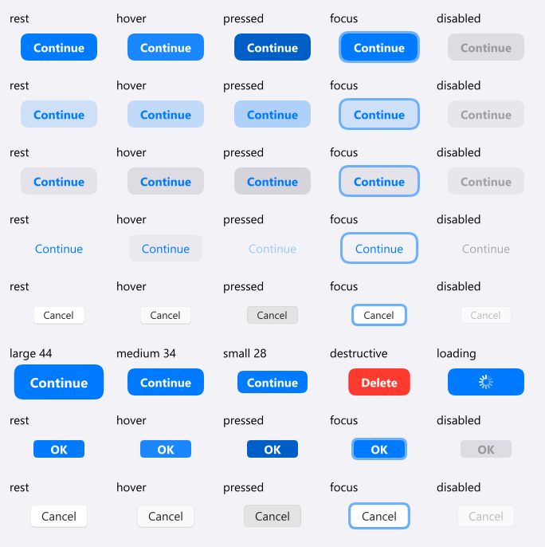 Filled, tinted, gray (Elevated), plain, macOS bordered (Outlined, 22/28), default, destructive, loading; large 44 / medium 34 / small 28 (sizes from the brief; Apple's large configuration is 50). Confident: systemBlue #007AFF/#0A84FF, tint fill 15 %, tertiary fill 12 %/24 %, macOS regular push button 22 tall, 13 pt label. Dark: docs/ui/looks/cupertino-dark/. No Apple reference exists: standard values are published HIG/UIKit/AppKit numbers, the rest approximations. Font: Segoe UI stands in for SF Pro (SF is not installed on this Windows host); sizes are SF sizes, glyph widths and the semibold weight (mapped to Segoe UI Bold) are not. 8 known gaps
| planned |
| Check boxTcxCheckBox → control.checkbox | ready The baseline: the v2 18 px box in its 40 px state circle, all states. | review Audit 2: 9 of 9 captured states have a cell and structure is exact outside text (0 px), but the box edge rows are up to 30 levels off on all 13 boxes (42 to 86 px each) and label ink is offset. 2 known gaps
| planned | started 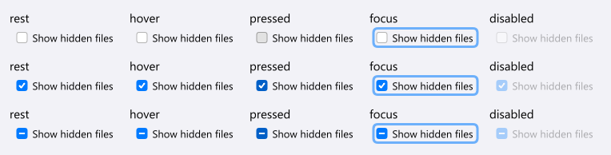 macOS check box 14 x 14 (confident), white face, accent fill with white tick or dash, 13 pt label. Also the iOS switch, an extra control without a status row: switch.png (51 x 31, thumb 27, systemGreen; confident), via control.switch_control. Dark: docs/ui/looks/cupertino-dark/. No Apple reference exists: standard values are published HIG/UIKit/AppKit numbers, the rest approximations. Font: Segoe UI stands in for SF Pro (SF is not installed on this Windows host); sizes are SF sizes, glyph widths and the semibold weight (mapped to Segoe UI Bold) are not. 8 known gaps
| planned |
| Radio buttonTcxRadioButton → control.radio | ready The baseline: the v2 20 px ring in its 40 px state circle, all states. | review Audit 2: 11 of 14 captured states have a cell, structure 4 px off outside text (max 13), but ring anti-aliasing differs (up to 200 levels) and 3 captures have no cell. 3 known gaps
| planned | started 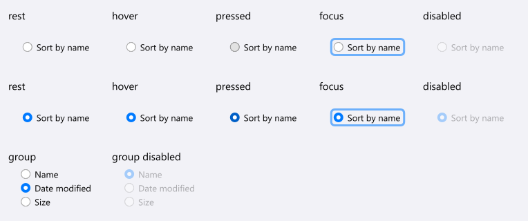 macOS radio 14 (confident), accent disc with 6 px white dot when selected, painted circles. Dark: docs/ui/looks/cupertino-dark/. No Apple reference exists: standard values are published HIG/UIKit/AppKit numbers, the rest approximations. Font: Segoe UI stands in for SF Pro (SF is not installed on this Windows host); sizes are SF sizes, glyph widths and the semibold weight (mapped to Segoe UI Bold) are not. 6 known gaps
| planned |
| Radio groupTcxRadioGroup → control.radio_group | ready The baseline: v2 radios stacked with no frame. | review Audit 2: 15 cells compared, group frame lines 13 levels off over 1790 px (radio_group_states), ring and caption ink as for radio. 2 known gaps
| planned | started Three-item group at rest and disabled (cells 'group' in radio.png), rows abut. Dark: docs/ui/looks/cupertino-dark/. No Apple reference exists: standard values are published HIG/UIKit/AppKit numbers, the rest approximations. Font: Segoe UI stands in for SF Pro (SF is not installed on this Windows host); sizes are SF sizes, glyph widths and the semibold weight (mapped to Segoe UI Bold) are not. 6 known gaps
| planned |
| Text editTcxTextEdit → control.text_field | ready The baseline: the existing v2 outlined field, unchanged. | review Audit 2: password edit rest and one focused state exact (0 px off, max 1); the second focused capture and the hot key edit have no cell; the baked tile shows dotted seams at 1.5x. 3 known gaps
| planned | started 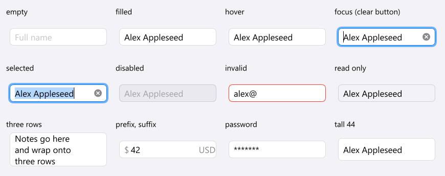 Rounded-rect text field 34 tall, 8 round, grouped-cell face with hairline, 17 pt value, placeholder at 30 % label (confident), clear button while focused and holding text (reports the empty string through change), selection, invalid red edge, read only, three rows, prefix and suffix, password. Search field (36 tall, 10 round, tertiary fill, magnifier, clear): search_field.png. Dark: docs/ui/looks/cupertino-dark/. No Apple reference exists: standard values are published HIG/UIKit/AppKit numbers, the rest approximations. Font: Segoe UI stands in for SF Pro (SF is not installed on this Windows host); sizes are SF sizes, glyph widths and the semibold weight (mapped to Segoe UI Bold) are not. 9 known gaps
| planned |
| Spin editTcxSpinEdit → control.spin_box | ready The baseline: the existing v2 outlined field, unchanged. | review Audit 2 (was review): rest cells exact (0 px off, max 1) and 3 states compared, 5 of 8 captured pressed arrows have no cell; the baked tile is dotted at 1.5x (correct at other widths). 3 known gaps
| planned | started 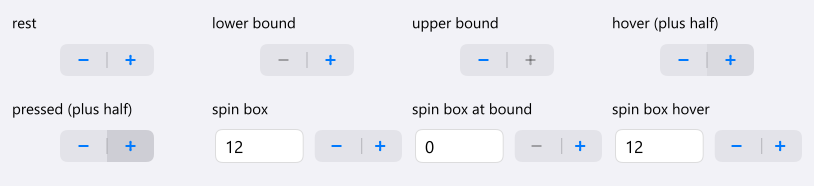 iOS stepper 94 x 32 (confident), minus and plus halves, divider, accent glyphs (30 % at a bound), hover and pressed fill; the spin box is the rounded field beside the stepper pill. Dark: docs/ui/looks/cupertino-dark/. No Apple reference exists: standard values are published HIG/UIKit/AppKit numbers, the rest approximations. Font: Segoe UI stands in for SF Pro (SF is not installed on this Windows host); sizes are SF sizes, glyph widths and the semibold weight (mapped to Segoe UI Bold) are not. 7 known gaps
| planned |
| Combo boxTcxComboBox → control.combo_box | ready The baseline: the v2 outlined combo box in the same cells. Open lists are on neper/combo_box_lists.png (run the app with an argument, `combo_box.exe lists`); the list opens fading, so one frame shows it part way. | review Audit 2: 5 of 28 captured states have a cell and 23 open-list and drop-button states do not; 23829 structural px off outside text over 15 sheets (max 255), open list sheets worst. 3 known gaps
| planned | started 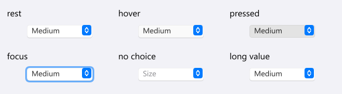 macOS pop-up button 22 tall: bezel, 13 pt value, accent chip with up/down chevrons (approx.); open (combo_box_open.png) holds it pressed with the macOS menu below. Select and picker heads use it. Dark: docs/ui/looks/cupertino-dark/. No Apple reference exists: standard values are published HIG/UIKit/AppKit numbers, the rest approximations. Font: Segoe UI stands in for SF Pro (SF is not installed on this Windows host); sizes are SF sizes, glyph widths and the semibold weight (mapped to Segoe UI Bold) are not. 8 known gaps
| planned |
| Image combo boxTcxImageComboBox → control.image_select | ready The baseline: control.select (no pictures: control.image_select falls back to it under the other looks). | review Audit 2: 8 sheets compared, 17427 structural px off outside text (open lists 6872 to 7249 each, max 255); the 3 captured open and cell-editor states have no cell. 3 known gaps
| planned | planned | planned |
| Date editTcxDateEdit → control.picker | ready The baseline: overlay.date_picker_with with a typed field (stray carets are the harness's focus slot, as in the other sheets). | started Audit 2: no date edit exists in any v3 capture; nothing to compare. 1 known gap
| planned | planned | planned |
| Mask editTcxMaskEdit → control.formatted_field | ready The baseline: the existing v2 outlined field, unchanged. | review Audit 2 (was matched): rest and focused password mask edit exact (0 px off, max 1), but the second focused capture has no cell and the baked tile shows dotted seams at 1.5x (correct at other widths and y). 3 known gaps
| planned | planned | planned |
| MemoTcxMemo → control.text_area | ready The baseline: the existing v2 outlined field, unchanged. | started Audit 2: no memo in any v3 capture; nothing to compare. 1 known gap
| planned | started control.text_area goes through the same Cupertino field (cell 'three rows'). Dark: docs/ui/looks/cupertino-dark/. No Apple reference exists: standard values are published HIG/UIKit/AppKit numbers, the rest approximations. Font: Segoe UI stands in for SF Pro (SF is not installed on this Windows host); sizes are SF sizes, glyph widths and the semibold weight (mapped to Segoe UI Bold) are not. 6 known gaps
| planned |
| Button editTcxButtonEdit → control.button_edit | ready The baseline: the existing v2 outlined field, unchanged. | review Audit 2 (was matched): the ellipsis frame is up to 23 levels off (37 to 50 px) and the focused path edit with selection 479 px off (max 157), aligned 1 px off horizontally; dotted at 1.5x. 3 known gaps
| planned | planned | planned |
| Token editTdxTokenEdit → control.token_field | ready The baseline: the existing v2 outlined field, unchanged. | started Audit 2: no token edit in v3 captures; nothing to compare. 1 known gap
| planned | planned | planned |
| Check list boxTcxCheckListBox → control.multi_select_list | ready The baseline: the v2 multi-select list (selection fill, 40 px rows, state circles). | review Audit 2: 6 of 6 captured states have a cell, 1956 structural px off outside text (max 253): item pitch and check boxes differ. 2 known gaps
| planned | planned | planned |
| Progress barTcxProgressBar → control.progress_bar | ready The baseline: v2 progress bar. | started Audit 2: the v3 progress bar was never on screen in any capture (3 progress frames show the report window only). 1 known gap
| planned | started 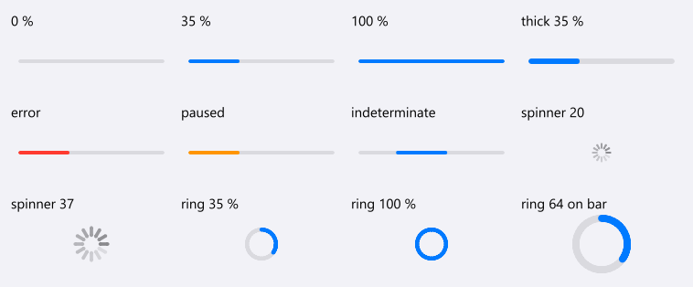 iOS progress view 4 (6 thick), systemFill track, accent fill, round ends; activity indicator of 12 ticks (20 and 37, confident), determinate ring; error red, paused orange. Indeterminate bar is a travelling 35 % capsule (iOS has none, macOS draws stripes). Dark: docs/ui/looks/cupertino-dark/. No Apple reference exists: standard values are published HIG/UIKit/AppKit numbers, the rest approximations. Font: Segoe UI stands in for SF Pro (SF is not installed on this Windows host); sizes are SF sizes, glyph widths and the semibold weight (mapped to Segoe UI Bold) are not. 8 known gaps
| planned |
| Group boxTcxGroupBox → control.group_box | ready The baseline: the v2 outlined group (rows with dividers); the section header cell shows a plain title. | review Audit 2 (was matched): 3 of 4 instances near exact (7 to 33 px off, max 56 on corners); the third Options group box sits 1 px left with its frame up to 95 levels off over 40 px. 2 known gaps
| planned | planned | planned |
| Page control (tabs)TcxPageControl → control.tabs | ready The baseline: v2 tabs (primary indicator) and the tab view. | review Audit 2: 13 of 15 captured tab states compared, 7665 structural px off outside text (max 255): tab strip frames and selected tab edges differ; bottom tabs 2295 px. 3 known gaps
| planned | started 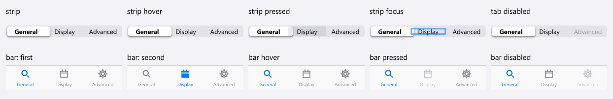 macOS tab view as a 24 tall segmented strip, and the iOS tab bar (49 tall, 10 pt labels under 25 icons, accent chosen, systemGray rest; confident). Dark: docs/ui/looks/cupertino-dark/. No Apple reference exists: standard values are published HIG/UIKit/AppKit numbers, the rest approximations. Font: Segoe UI stands in for SF Pro (SF is not installed on this Windows host); sizes are SF sizes, glyph widths and the semibold weight (mapped to Segoe UI Bold) are not. 8 known gaps
| planned |
| SplitterTcxSplitter → control.split_view | ready The baseline: the v2 sash (1 px line, grip on hover, primary line while dragged). | review Audit 2: Filter splitter strip fill 9 levels off over 12x320 px; live splitters 1467 and 1242 px off (max 120); the 3 pressed captures have no cell. 3 known gaps
| planned | planned | planned |
| Status barTdxStatusBar → navigation.status_bar | ready The baseline: v2 status bar. | review Audit 2 (was matched): main-window status bar exact outside text (10 px off, max 4); the report-window status bar has panel separators 10 to 23 levels off over 83 px. 2 known gaps
| planned | planned | planned |
| Toolbar buttonTdxBarButton → control.glyph_button | ready The baseline: round glyph buttons (control.glyph_toggle); the sheet's first cell is one row of them. | review Audit 2: one sheet, 277 structural px off outside the glyphs (max 69); no toolbar state can be captured. 2 known gaps
| planned | started 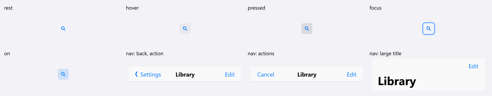 Toolbar glyph buttons (accent, rounded hover and pressed layer, tint when on) and the iOS navigation bar: 44 row, centred 17 semibold title, back chevron and previous title, accent text actions, 34 bold large title (confident). Dark: docs/ui/looks/cupertino-dark/. No Apple reference exists: standard values are published HIG/UIKit/AppKit numbers, the rest approximations. Font: Segoe UI stands in for SF Pro (SF is not installed on this Windows host); sizes are SF sizes, glyph widths and the semibold weight (mapped to Segoe UI Bold) are not. 8 known gaps
| planned |
| Menu barTdxBarManager (main menu) → navigation.menu_bar | ready The baseline: v2 menu bar (the open-menu sheet shows no menu because the menu fades in). | review Audit 2: 9 open-title captures and rest compared, frames exact except 4 px 18 levels off (x 334), title ink mostly 1 to 2 px off in y. 2 known gaps
| planned | planned | planned |
| Popup menuTdxBarPopupMenu → overlay.menu | ready The baseline: v2 menu (navigation.bar_menu); the menu fades in so the static sheet shows little. | review Audit 2 (was matched): 26 of 26 captured menus compared; frames, rows, separators and text boxes align (1573 of 2478917 structural px off outside text, ink within 1 px) but 12 px runs (mnemonic underline or check glyph) are 63 to 240 levels off in View, Search and Print menus, icons are placeholders. 3 known gaps
| planned | started 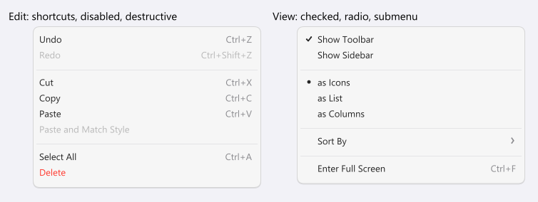 macOS menu: flat panel, 10 round, 5 inset, 22 tall 13 pt rows, check and dot slot, shortcuts and submenu chevron in the secondary colour, accent fill with white text on the hovered row (popup_menu-hover.png). Dark: docs/ui/looks/cupertino-dark/. No Apple reference exists: standard values are published HIG/UIKit/AppKit numbers, the rest approximations. Font: Segoe UI stands in for SF Pro (SF is not installed on this Windows host); sizes are SF sizes, glyph widths and the semibold weight (mapped to Segoe UI Bold) are not. 8 known gaps
| planned |
| Hint (tooltip)TcxHintStyleController → overlay.tooltip | ready The baseline: the dark plain tooltip and the raised rich tooltip. | started Audit 2: no tooltip capture is possible or exists. 1 known gap
| planned | started 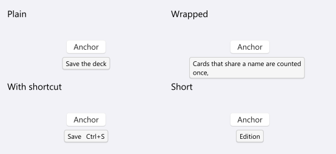 macOS help tag: light or dark rounded face, hairline, 11 pt, below the anchor (approximation of macOS 11+). Dark: docs/ui/looks/cupertino-dark/. No Apple reference exists: standard values are published HIG/UIKit/AppKit numbers, the rest approximations. Font: Segoe UI stands in for SF Pro (SF is not installed on this Windows host); sizes are SF sizes, glyph widths and the semibold weight (mapped to Segoe UI Bold) are not. 7 known gaps
| planned |
| Scroll barTcxScrollBar → widget.scrollbar | ready The baseline: the theme's overlay thumb, unchanged by round 4. | review Audit 2: live scroll bar 684 structural px off outside text (max 240); 5 of 6 pressed captures have no cell. 3 known gaps
| planned | started 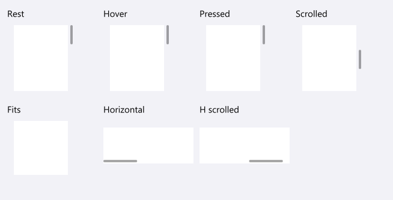 Overlay scroll indicator: thin rounded thumb in the label colour at 35 %, no track, widening under the pointer (runtime behaviour). Dark: docs/ui/looks/cupertino-dark/. No Apple reference exists: standard values are published HIG/UIKit/AppKit numbers, the rest approximations. Font: Segoe UI stands in for SF Pro (SF is not installed on this Windows host); sizes are SF sizes, glyph widths and the semibold weight (mapped to Segoe UI Bold) are not. 7 known gaps
| planned |
| List boxTcxListBox → control.list_box | ready The baseline: the v2 list box (rounded frame, check on the chosen row). | review Audit 2: 2 of 2 captured states compared, 445 structural px off outside text (max 47): border column and focus rectangle. 2 known gaps
| planned | started 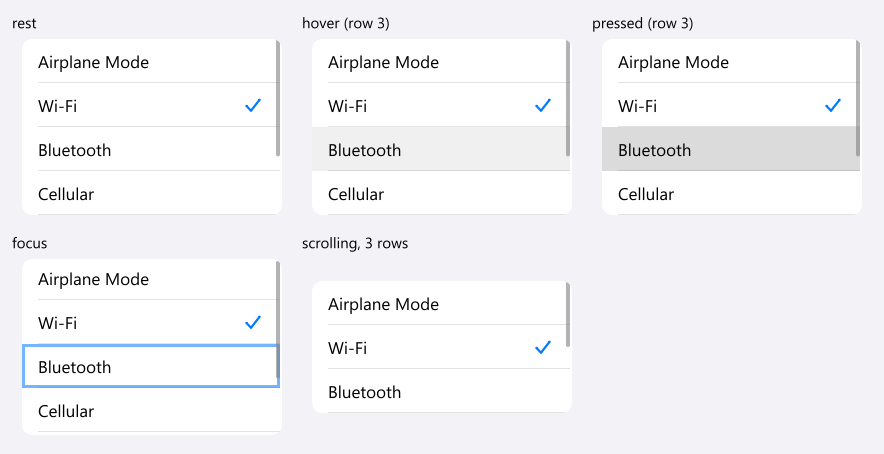 Inset grouped list: cell colour, 10 round, 44 rows, 17 pt, hairline separators inset 16, trailing accent tick on the choice, gray pressed fill. Dark: docs/ui/looks/cupertino-dark/. No Apple reference exists: standard values are published HIG/UIKit/AppKit numbers, the rest approximations. Font: Segoe UI stands in for SF Pro (SF is not installed on this Windows host); sizes are SF sizes, glyph widths and the semibold weight (mapped to Segoe UI Bold) are not. 9 known gaps
| planned |
| Tree listTcxTreeList → tree_adapter | ready The baseline: v2 tree table, unchanged by round 4. | review Audit 2: 4 of 5 captured states compared, 10069 structural px off outside text (max 206): rows, expanders and check boxes differ; the empty list focus has no cell. 2 known gaps
| planned | planned | planned |
| Vertical grid (property grid)TcxVerticalGrid → collection.property_grid | ready The baseline: collection.property_grid_of, the existing v2 property grid with group headings, same two sheets. | review Audit 2: 0 of 4 captured Deck Properties states have a cell; the rest sheet has 4096 structural px off outside text (max 232), the states sheet 25140. 3 known gaps
| planned | planned | planned |
| Data gridTcxGrid → datagrid (own Look: gridlook.v3()) | ready The baseline: the theme's own data grid. The sheets build their grids afresh per look, so the Windows look no longer leaks into the Neper passes (the earlier 1.5x Neper render showed the Windows grid). | review Audit 2: 9 of 15 captured states have a cell; 74116 structural px off outside text over 6 sheets (max 174): grid lines and header bands offset. 3 known gaps
| planned | planned | planned |
| Dialog (form chrome)TForm / TcxButton row → overlay.dialog | ready The baseline: the v2 card over a scrim (dialog.png, dialog_wide.png), the alert with icon (dialog_message.png) and the frameless title bar (title_bar.png). The Neper pixels of the earlier sheets are unchanged. | review Audit 2: title bars 180 structural px off outside text (max 209); dialog bodies are not composed by the sheet (the large difference there is app content); inactive caption captured for the main window only. 2 known gaps
| planned | started 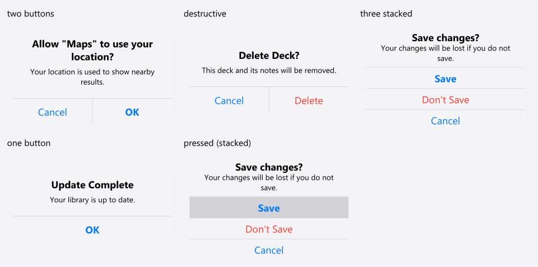 iOS alert: 270 wide, 14 round, 17 semibold title, 13 message, 44 buttons (two side by side, more stacked), default semibold, destructive red; the open dialog over its scrim is dialog_open.png (overlay.dialog / alert_dialog). Dark: docs/ui/looks/cupertino-dark/. No Apple reference exists: standard values are published HIG/UIKit/AppKit numbers, the rest approximations. Font: Segoe UI stands in for SF Pro (SF is not installed on this Windows host); sizes are SF sizes, glyph widths and the semibold weight (mapped to Segoe UI Bold) are not. 9 known gaps
| planned |


Gaps: no Neper equivalent yet
- Embedded browser (TWebBrowser / TEdgeBrowser): No Neper control; listed, not built.
- Chart (TcxChart / TChart): e.gfx.chart draws charts but there is no chart control with a Windows look.
- Tray icon (TTrayIcon): No Neper equivalent.
- Native file dialogs (TOpenDialog / TSaveDialog): No Neper equivalent; the OS dialog is used.
- Image combo box (TcxImageComboBox): No per-item image in Neper's combo box rows; control.image_select adds it for the Windows look and is the plain select under the others